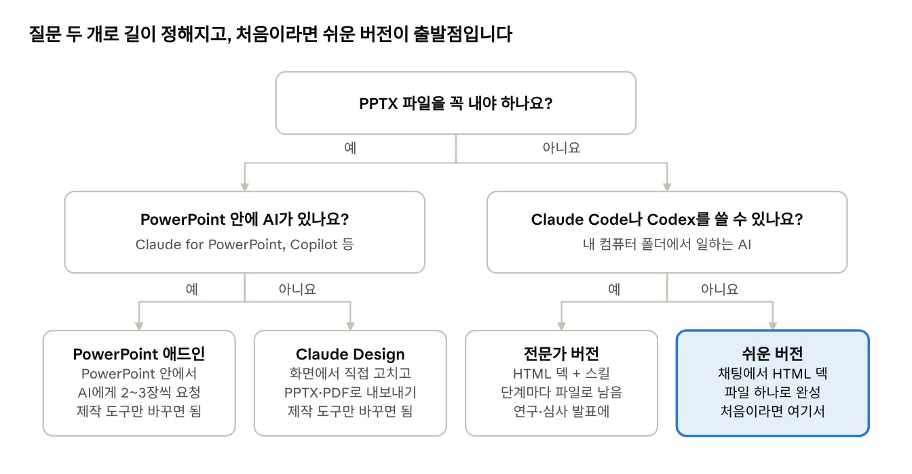
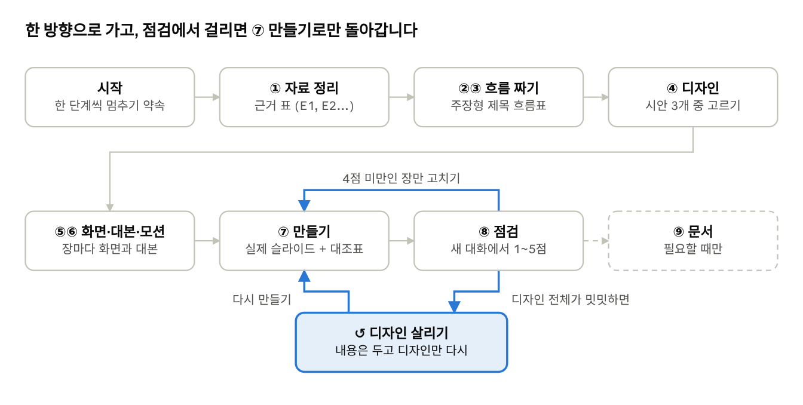

이 설명서로 할 수 있는 것
STORY → SLIDES는 발표 주제와 자료를 넣으면 AI에게 붙여넣을 요청문(프롬프트)을 단계별로 만들어 주는 웹페이지입니다. 교수님은 복사해서 AI 채팅창에 붙여넣고, 답을 확인한 뒤 다음 단계로 넘어가기만 하면 됩니다. 코딩을 몰라도 됩니다.
세 줄 요약
사이트의 ‘프롬프트 만들기’에서 발표 주제, 청중, 목표, 가진 자료를 채웁니다.
단계마다 ‘복사하기’를 눌러 AI(Claude, ChatGPT 등)에 붙여넣고, AI의 답을 확인한 뒤 ‘다음 단계’로 갑니다.
마지막 ‘점검’ 단계에서 숫자·출처·대본을 확인합니다. 디자인이 마음에 안 들면 ‘디자인 살리기’ 프롬프트를 씁니다.
준비물
| 준비물 | 꼭 필요한가 | 쓰는 곳 |
|---|---|---|
| 인터넷 브라우저 (크롬, 엣지, 사파리) | 필수 | 사이트 열기 |
| AI 채팅 서비스 (Claude, ChatGPT, Gemini 중 하나) | 필수 | 프롬프트 붙여넣기 |
| 발표 재료 (강의안, 논문, 보고서, 기존 PPT, 영상과 그 대본) | 권장 | AI에게 첨부 |
| Claude Code 또는 Codex | 선택 | 전문가 버전에서 슬라이드를 폴더째 만들 때 |
처음이라면 ‘쉬운 버전’으로 시작하세요. 정보 입력에 10분, 단계 진행에 15분, 점검에 5분 정도면 초안 한 벌을 볼 수 있습니다. 자료가 길거나 장수가 많으면 더 걸립니다.
막히면 이 설명서를 AI 채팅창에 함께 붙여넣고 “이 설명서 기준으로 지금 내가 어느 단계이고 다음에 뭘 하면 되는지 알려 줘”라고 물어보세요. 설명서는 맨 위 ‘PDF로 받기’로 내려받을 수 있습니다.
먼저 알아 둘 말
사이트와 AI 답에 자주 나오는 말입니다. 모르는 말이 보이면 이 표로 돌아오세요.
| 말 | 쉬운 뜻 | 언제 나오나 |
|---|---|---|
| 프롬프트 | AI에게 보내는 요청문. 사이트가 대신 써 줍니다 | 모든 단계 |
| 근거 표 (E1, E2…) | 자료에서 뽑은 사실 목록. 번호, 내용, 출처(쪽·장·영상 시각), 상태를 적습니다 | ① 자료 정리 |
| 상태 | 근거의 믿을 만한 정도. 확인됨(원문) · 기사만 · 추측 · 서로 다름 | ① 자료 정리 |
| 흐름표 | 장마다 제목, 쓸 근거, 다음 장으로 넘어가는 질문을 적은 표 | ②③ 흐름 짜기 |
| 주장형 제목 | “현황” 대신 “응답한 대학 10곳 중 4곳만 정책을 갖췄다”처럼 결론을 말하는 제목 | ②③ 흐름 짜기 |
| 시안 | 본 제작 전에 미리 보는 디자인 견본. 서로 다른 방향으로 3개를 받아 고릅니다 | ④ 디자인 |
| 프레임 | 장 하나의 배치 틀. 질문형 표지, 빅 넘버, 비교, 프로세스 등 8가지 | ④ 디자인 |
| 대본 | 발표자가 말할 원고. 화면 글을 읽지 않고 그림을 가리키며 설명합니다 | ⑤⑥ 화면·대본 |
| 모션 | 클릭할 때 나타나는 움직임. 숫자가 올라가며 세어지는 카운트업, 선이 그려지는 선 그리기 등 | ⑤⑥ 화면·대본·모션 |
| 모핑 | 다음 장에도 이어지는 요소가 그 자리로 옮겨 가며 바뀌는 장 전환. PowerPoint의 ‘모핑’과 같은 느낌입니다 | ⑥ 모션, ⑦ 만들기 |
| HTML 덱 | 웹페이지 형식으로 만든 슬라이드. 브라우저로 열어 발표하고, 인쇄하면 PDF가 됩니다 | ⑦ 만들기 |
| 스킬 | AI에게 주는 작업 설명서 묶음(폴더). 한 번 넣어 두면 AI가 그 방식대로 만듭니다 | ⑦ 제작 도구, 전문가 버전 |
| 채팅 AI | 대화창에서 답을 주는 AI. Claude, ChatGPT, Gemini 등 | 쉬운 버전 |
| 에이전트 | 내 컴퓨터 폴더에서 파일을 직접 만들고 고치고 띄워 보는 AI. Claude Code, Codex | 전문가 버전 |
| 지침 파일 | 에이전트가 일할 때마다 먼저 읽는 규칙 파일. CLAUDE.md 또는 AGENTS.md | 전문가 버전 |
| 승인 | 다음 단계로 가기 전에 사람이 확인하고 “확인”이라고 답하는 지점 | 정밀 제작 경로 |
나에게 맞는 길 고르기
PPTX 파일을 꼭 내야 하는지, 에이전트(Claude Code·Codex)를 쓸 수 있는지 두 가지만 정하면 길이 정해집니다.

어느 길이든 ①~⑥은 똑같고, 사이트 ‘더 설정하기’에서 ⑦ 제작 도구 설정만 달라집니다.
| 길 | 사이트 버전 | ⑦ 제작 도구 설정 | 받는 결과물 |
|---|---|---|---|
| 쉬운 버전 | 쉬운 버전 | HTML 덱 + 스킬 (기본값) | HTML 파일 하나, 인쇄하면 PDF |
| Claude Design | 쉬운 버전 | Claude Design / Slides | 화면에서 고치는 덱, PPTX·PDF로 내보내기 |
| PowerPoint 애드인 | 쉬운 버전 | Claude for PowerPoint, ChatGPT for PowerPoint, PowerPoint Copilot 중 하나 | PowerPoint 안에서 바로 만든 PPTX |
| 전문가 버전 | 전문가 버전 | HTML 덱 + 스킬 (PPTX가 필요하면 ‘예’) | 설계 파일이 든 폴더와 완성 덱 |
사이트 지도
실제 작업은 ‘✎ 프롬프트 만들기’ 한 곳에서 끝납니다. 나머지 메뉴는 단계를 진행하다 막혔을 때 펼어 보는 참고서입니다. 왼쪽(휴대폰은 위쪽) 메뉴 순서 그대로입니다.
| 메뉴 | 들어 있는 것 | 언제 보나 |
|---|---|---|
| 시작하기 | 사이트 소개와 ‘내 발표 프롬프트 만들기’ 버튼 | 처음 들어왔을 때 |
| 경로 고르기 | 빠른 제작(중요한 지점에서만 확인)과 정밀 제작(모든 단계 확인) | 시작 전에 한 번 |
| 전체 흐름 | ①~⑧ 단계와 확인 지점을 한 화면에 | 전체 그림이 궁금할 때 |
| ①–③ 근거·구조·관계도 | 예시 발표(“과제에 AI, 어디까지 괜찮을까” 8장)의 근거 표와 흐름표 | AI의 ①②③ 결과와 비교할 때 |
| ④ 디자인 | 대표 프레임 8가지, 디자인 방향 고르는 법 | 시안을 고를 때 |
| ⑤ 화면과 대본 | 화면 한 장과 그 대본을 짝지은 예시 | 대본이 화면을 그대로 읽고 있을 때 |
| ⑥ 모션 | 대표 모션 8가지를 움직이는 그림으로, 모션 레퍼런스 담는 법 | 움직임을 정할 때 |
| ⑦ 제작 도구 | 도구별 비교, ‘스킬 받기’(story-deck.zip과 공개 스킬 6개) | 어떤 도구로 만들지 정할 때 |
| ✦ 디자인 재료 | GitHub 디자인·스킬 저장소 목록, 레퍼런스 첨부 프롬프트, 직접 고치기용 프롬프트 8개 | 결과를 나만의 것으로 바꾸고 싶을 때 |
| ✎ 프롬프트 만들기 | 발표 정보 입력, 단계별 프롬프트, 복사·저장 버튼 | 실제 작업할 때 (가장 많이 씁니다) |
| ⑧⑨ 점검·문서 | 점검 항목 6가지(전체 15개), ‘↺ 디자인 살리기 프롬프트 열기’ 버튼, 함께 낼 문서 | 완성 직전 |
| 도구 동향 | 2026년 발표 제작 도구가 어떻게 달라졌는지 | 배경이 궁금할 때 |
| 공식 자료 | 기능 설명에 쓴 공식 문서 링크 | 출처를 확인할 때 |
프롬프트 만들기 화면은 세 부분입니다. 위쪽 ‘발표 정보’ 칸, 왼쪽 단계 목록, 가운데 프롬프트 상자와 그 아래 버튼(복사하기 · 이전 단계 · 다음 단계 · TXT로 저장 · 이 단계 원래대로)입니다. 맨 위 ‘쉬운 버전 / 전문가 버전’ 스위치로 두 버전을 오갑니다.
30분 따라하기
쉬운 버전으로 초안 한 벌을 만드는 순서입니다. ⑧ 점검만 새 대화에서 하고, 나머지는 모두 같은 AI 대화창에서 이어 갑니다.
준비 (10분)
사이트 첫 화면의 ‘내 발표 프롬프트 만들기’를 누릅니다. 맨 위 스위치가 ‘쉬운 버전’인지 확인합니다.
‘발표 정보’에는 AI 윤리 발표 예시가 채워져 있습니다. ‘모두 비우기’를 누르고 내 발표로 채웁니다. 예시가 다시 보고 싶으면 ‘예시로 다시 채우기’를 누르면 됩니다.
발표 목표: 발표가 끝난 뒤 청중이 할 수 있게 될 일을 한 문장으로 씁니다. (예: “우리 지역 농가가 격는 기후 위험 3가지를 설명할 수 있다”)
가진 자료: 자료마다 한 줄씩, 문서·PPT·영상을 구분해 적습니다. 파일은 여기가 아니라 AI 대화창에 첨부합니다.
내 취향·분위기: 비워도 됩니다. 적으면 결과가 남들과 달라집니다. (예: “오래된 농업 잡지 느낌, 차분하게”)
‘더 설정하기’는 필요할 때만 엽니다. 제작 도구는 기본값 ‘HTML 덱 + 스킬’ 그대로 두고, PowerPoint 파일을 꼭 내야 하면 ‘PPTX 파일도 필요한가요?’를 ‘예’로 바꿉니다. 디자인 방향은 ‘정하지 않음’을 권합니다.
AI 채팅에서 새 대화를 열고 자료 파일을 첨부합니다. 영상은 AI가 보지 못하는 경우가 많으니 자막이나 스크립트 파일을 함께 붙입니다.
단계 진행 (15분)
‘시작’ 단계에서 ‘복사하기’ → 대화창에 붙여넣기. AI가 “준비됐어”라고 하거나 질문을 3개까지 합니다. 질문에 답하면 됩니다.
‘다음 단계’ → ① 자료 정리. AI가 근거 표(E1, E2…)를 줍니다. 숫자 2~3개를 원문과 직접 대조하고, ‘못 붙임’이나 ‘추측’이 많지 않은지 봅니다.
②③ 흐름 짜기. 장별 흐름표가 나옵니다. 제목만 위에서부터 이어 읽어 이야기가 되는지, ‘확인 필요’가 붙은 제목이 있는지 봅니다.
④ 디자인. 서로 다른 시안 3개(A 무난 · B 과감 · C 의외)가 나옵니다. “B로 하되 글꼴은 A처럼”처럼 골라서 답합니다.
⑤⑥ 화면·대본·모션. 장마다 화면, 대본, 움직임이 나옵니다. 대본이 화면 글을 그대로 읽지 않는지, 시간 합계가 발표 시간 안인지 봅니다.
⑦ 만들기. AI가 HTML 파일을 만듭니다. Claude는 대화 옆 창에서 바로 보여 주고, 내려받은 파일은 더블클릭하면 브라우저로 열립니다. ←/→로 넘기고 S 키로 발표자 창을 엽니다.
고칠 때는 장 번호로 말합니다. “4번 장: 제목은 그대로, 그림만 바꿔 줘”
E 키를 누르면 화면 글자를 직접 클릭해 고칠 수 있습니다.
점검 (5분)
AI 새 대화를 열고 ⑧ 점검 프롬프트를 붙입니다. 완성본 PDF(Ctrl+P로 저장), 대본, 근거 표, 남길 한 문장을 함께 넣습니다. 새 대화를 쓰는 이유는 만든 대화가 자기 결과를 후하게 보기 때문입니다.
장마다 1~5점이 나옵니다. 4점 미만인 장만 원래 대화로 돌아가 고칩니다. 디자인이 전체적으로 마음에 안 들면 ‘↺ 디자인 살리기’로 갑니다.
프롬프트 상자 안의 글을 직접 고쳐도 됩니다. 고친 내용은 발표 정보를 바꿔도 그대로 남고, 새로 만들려면 ‘이 단계 원래대로’를 누릅니다.
단계별 자세히
모든 단계의 규칙은 하나입니다. AI가 답하면 교수님이 확인하고, 만족할 때만 다음 단계 프롬프트를 붙입니다. 근거 표가 틀리면 그 뒤가 모두 틀리므로 ①을 가장 꼼꼼히 봅니다.

대부분 위에서 아래로 한 번 지나가고, ⑧ 점검 뒤에는 걸린 장만 ⑦으로 돌아가 고칩니다. 디자인 전체가 문제일 때만 ↺을 거칩니다.
| 단계 | AI가 하는 일 | 교수님이 확인할 것 | 자주 생기는 문제 → 대처 |
|---|---|---|---|
| 시작 | 주제·청중·시간·목표를 듣고 ‘한 단계씩 멈추기’를 약속 | “준비됐어” 또는 질문만 했는지 | 바로 슬라이드를 만들어 버림 → “아직 만들지 말고 기다려 줘” |
| ① 자료 정리 | 자료에서 쓸 수 있는 사실을 근거 표로, 핵심 3~5개와 ‘아직 말하면 안 되는 것’ | 숫자 2~3개 원문 대조, 출처(쪽·장·영상 시각), 규정이 누구에게 적용되는지 | 못 연 파일을 아는 척 → “열지 못한 파일을 먼저 말해 줘”, 영상은 자막 첨부 |
| ②③ 흐름 짜기 | 남길 한 문장, 장별 주장형 제목·근거 번호·다음 장으로 넘어가는 질문 | 제목만 이어 읽어도 이야기가 되는지, 근거보다 세게 말한 제목 | 제목이 “배경”, “현황” 같은 단어 → “결론을 말하는 문장으로 바꿔 줘” |
| ④ 디자인 | 서로 다른 방향의 시안 3개, 고른 뒤 장별 프레임 | 셈이 색만 다른 건 아닌지, 숫자 장이 한눈에 읽히는지 | 셈이 비슷함 → “배치부터 다르게, 잡지 지면·포스터·다크 키노트처럼” |
| ⑤⑥ 화면·대본·모션 | 장마다 화면 문구, 대본, 등장 순서와 클릭 움직임 | 대본이 화면 글을 읽지 않는지, 숫자 뒤에 E번호, 시간 합계 | 움직임이 장마다 요란함 → “시선을 옮길 때만, 장당 하나” |
| ⑦ 만들기 | 고른 도구로 실제 슬라이드를 만들고 ‘흐름표·대본과 같은가’ 대조표 제출 | 대조표에 ‘다름’이 있는지, 글자가 잘리지 않는지 | 새 숫자를 슬쩍 넣음 → “근거 표에 없는 숫자는 빼 줘” |
| ⑧ 점검 | 새 대화에서 처음 보는 검토자처럼 장마다 1~5점 | 4점 미만인 장, 근거 표와 다른 숫자 | 모두 ‘문제 없음’ → PDF나 캡처를 다시 붙이고 “장마다 점수를 매겨 줘” |
| ⑨ 문서 | 대본 원고, A4 한 장 요약, 보고서, 예상 질문 10개와 30초 답 | 발표에 없는 숫자가 들어갔는지 | 선택 단계. 필요할 때만 |
| ↺ 디자인 살리기 | 내용은 두고 디자인과 움직임만 처음부터 다시 | 제목·숫자·대본·출처가 그대로인지 | 아래 ‘결과가 마음에 안 들 때’ 참고 |
④에서 AI가 고르는 프레임은 여덟 가지입니다: 질문형 표지, 카드 묶음, 빅 넘버, 프로세스, 비교, 차트, 사례·인용, 요약·행동. 같은 프레임이 세 장 연달아 나오지 않게 합니다.
⑥의 움직임도 여덟 가지입니다: 순서대로 등장, 강조·흐리게, 숫자 카운트업, 선 그리기, 차트 순차 표시, 확대, 비교 드러내기, 모핑. 사이트 ⑥ 모션 메뉴에서 각각 움직이는 모습을 볼 수 있습니다. Google Slides처럼 모핑이 없는 도구를 고르면 프롬프트가 알아서 빼 달라고 요청합니다.
나만의 결과 만들기
같은 프롬프트를 그대로 쓰면 사람마다 비슷한 슬라이드가 나오기 쉽습니다. 다르게 만드는 방법은 네 가지이고, 앞의 두 개만 해도 차이가 크게 납니다.
1. 내 취향을 적고 시안에서 고르기
‘내 취향·분위기’ 칸에 한 줄을 적으면 ④의 시안 3개 중 하나 이상이 그 취향을 중심으로 나옵니다. “실험 노트 느낌”, “오래된 신문 지면”, “어두운 강당 조명”처럼 구체적일수록 좋습니다. 디자인 방향은 ‘정하지 않음’으로 두고, 나온 시안을 섯어서 골라도 됩니다.
2. 레퍼런스를 첨부하기
마음에 드는 발표 화면이나 움직임이 있으면 ‘더 설정하기’의 레퍼런스 칸에 적고, 캡처를 AI에게 첨부합니다.
디자인 레퍼런스: 링크와 캡처 2~3장. ‘가져올 것’(색·글꼴·배치)과 ‘가져오지 않을 것’(로고·문구·사진)을 나눠 적습니다.
모션 레퍼런스: 영상 링크와 구간(예: 0:12~0:18), 핵심 장면 캡처 3~6장. AI는 영상을 직접 못 보는 경우가 많아 캡처가 더 정확합니다.
‘✦ 디자인 재료’ 메뉴에 두 경우의 첨부용 프롬프트가 따로 있습니다.
3. 만든 덱에 ‘직접 고치는 기능’ 넣기
HTML 덱을 만든 뒤, 아래 프롬프트를 붙이면 AI가 덱 안에 조작 기능을 넣어 줍니다. 교수님이 화면에서 직접 만져 보고 고를 수 있습니다. 프롬프트 전문은 ‘✦ 디자인 재료’에 있습니다.
| 기능 | 여는 법 | 할 수 있는 것 |
|---|---|---|
| 디자인 조절 패널 | T 키 | 강조색, 글꼴 쌍, 제목 크기, 여백, 움직임 세기를 바꾸면 모든 장에 바로 반영 |
| 장별 배치 바꾸기 | L 키 | 한 장의 배치 변형 2~3개를 넘겨 보며 고르기 |
| 드래그로 위치 옮기기 | E 키(편집 모드) | 요소를 마우스로 끌어 옮기고 크기 바꾸기 |
| 시안 갤러리 | 프롬프트로 요청 | 같은 장을 6가지 방향으로 한 화면에, 두 개를 골라 섞기 |
| 모션 타임라인 | M 키 | 움직임의 시작 시점과 길이를 막대로 보고 끌어서 조절 |
| 레퍼런스에서 스타일 뽑기 | 프롬프트로 요청 | 캡처에서 색·글꼴 느낌·여백을 뽑아 후보 3개로 비교 |
| 리허설 모드 | R 키 | 장별 목표 시간과 실제 시간, 넘으면 빨간 표시 |
| 청중 반응 장 | 마지막 장 | 선택지를 누르면 막대가 자라는 즉석 투표 (인터넷 없이 동작) |
4. 더 좋은 스킬·저장소를 쓰게 하기
스킬은 AI에게 주는 작업 설명서입니다. 주로 전문가 버전(Claude Code·Codex)에서 쓰며, 설치 방법은 ‘전문가 버전’ 절에 있습니다. ‘✦ 디자인 재료’에는 다섯 갈래로 정리되어 있습니다.
| 갈래 | 대표 저장소 | 쓰는 때 |
|---|---|---|
| 디자인 스킬 | anthropics/skills(frontend-design), pbakaus/impeccable | 흔한 AI 디자인 티를 줄이고 싶을 때 |
| 슬라이드 스킬 | zarazhangrui/frontend-slides, lewislulu/html-ppt-skill | HTML 덱을 만들고 고치고 내보낼 때 |
| 스킬 찾기 | vercel-labs/skills(find-skills) | AI가 스킬을 직접 검색·비교하게 할 때 |
| 디자인 레퍼런스 | VoltAgent/awesome-design-md | 디자인 원칙(색 수, 글꼴 역할, 여백)을 참고할 때 |
| 모션 레퍼런스 | GSAP, Codrops | 움직임을 보고 고를 때 |
어떤 저장소든 로고, 브랜드 이름, 고유한 그림은 가져오지 않고 구조와 원칙만 참고하게 합니다. 사이트의 ‘스킬 찾기’ 프롬프트에는 라이선스 확인과 ‘설치는 내 확인 후에만’이 들어 있습니다.
결과가 마음에 안 들 때
내용은 맞는데 화면이 밋밋하면 ‘↺ 디자인 살리기’를 씁니다. 프롬프트 만들기의 마지막 단계이고, ⑧⑨ 점검 메뉴의 ‘↺ 디자인 살리기 프롬프트 열기’ 버튼으로도 갈 수 있습니다.
이 프롬프트는 AI에게 네 가지를 분명히 말합니다.
사용자가 이전 결과에 크게 실망했고, 이번에는 디자인이 최우선이다.
제목·숫자·대본·출처는 그대로 두고 디자인과 움직임만 처음부터 다시 한다.
장마다 ‘문제 → 구체적인 해결’을 적고 그대로 고친다.
지금 화면과 다른 방향의 시안 3개를 다시 보여 주고, 스스로 채점해 4점 미만은 다시 만든다.
쓰는 순서는 이렇습니다.
지금 화면의 캡처나 PDF를 첨부하고, 디자인 살리기 프롬프트를 붙입니다.
아래 표에서 눈에 띄는 문제를 골라 그 문장을 프롬프트 끝에 장 번호와 함께 덧붙입니다.
새 시안 3개 중 하나를 고릅니다. 섯어도 됩니다.
다시 만들어지면 ⑧ 점검을 새 대화에서 한 번 더 합니다.
바로 쓰는 요청 문장
| 보이는 문제 | 이렇게 말하세요 |
|---|---|
| 중요한 숫자가 본문과 크기가 비슷하다 | “3번 장: 40%를 화면의 주인공으로 아주 크게, 0에서 올라가며 세어지게 해 줘” |
| 단계 사이 화살표가 그냥 놓여 있다 | “화살표를 왼쪽부터 선이 그려지며 이어지게 해 줘” |
| 화면 아래 절반이 비어 있다 | “도식을 키워 빈 곳을 채우거나 장을 둘로 나눠 줘” |
| 제목은 두 가지를 말하는데 하나만 강조되었다 | “제목이 말하는 두 가지를 같은 방식으로 강조해 줘” |
| 모든 장이 같은 카드 배치다 | “이웃한 장끼리 도식 종류가 겹치지 않게 바꿔 줘. 큰 숫자, 흐름선, 비교, 인용처럼” |
| 글자가 너무 많다 | “화면 문구는 제목 빼고 20단어 안쪽으로, 나머지는 대본으로 옮겨 줘” |
| 글자가 잘리거나 너무 작다 | “글자를 줄이지 말고 장을 나눠 줘” |
| 출처 줄이 그림과 겹친다 | “7번 장: 출처 줄과 겹치는 패널을 위로 올려 줘” |
| 뜻 없는 선이나 화살표가 있다 | “무엇을 잇는지 설명할 수 없는 선은 빼 줘” |
| 흔한 AI 느낌이 난다 | “의미 없는 그라데이션·아이콘, 모든 제목 위의 영어 라벨을 빼 줘” |
| 움직임이 정신없다 | “대본 문장에 맞춘 움직임만 남기고 장당 한두 개로 줄여 줘” |
고칠 때는 ‘장 번호 + 그대로 둘 것 + 바꿀 것’ 순서로 말하고, 한 번에 세 장 이하만 고치게 하면 실수가 줄어듭니다. AI 결과는 같은 프롬프트라도 대화마다 품질이 달라서, 시안을 여러 개 받아 고르는 것이 가장 확실한 방법입니다.
전문가 버전
전문가 버전은 AI 에이전트(Claude Code, Codex)가 교수님 컴퓨터의 작업 폴더에서 파일을 직접 만들고, 띄워 보고, 고치는 방식입니다. 단계마다 결과가 파일로 남고, 설계와 완성본이 같은지 프로그램으로 대조합니다. 연구 발표, 심사, 여러 학기 고쳐 쓸 강의 자료에 맞고, 처음이라면 쉬운 버전을 먼저 해 보시길 권합니다.
준비
Claude Code 또는 Codex를 설치합니다. 설치와 요금제는 각 서비스의 공식 안내를 따릅니다.
발표용 빈 폴더를 만들고 자료 파일을 넣습니다.
사이트에서 ‘전문가 버전’으로 바꾸고, ‘더 설정하기 → 프로젝트 지침 대상’에서 Claude Code(CLAUDE.md) 또는 Codex(AGENTS.md)를 고릅니다.
‘지침 파일 저장’으로 받은 파일을 폴더 맨 위에 둡니다. 에이전트가 일할 때마다 먼저 읽는 발표 정보와 규칙입니다.
‘스킬 묶음 받기 (.zip)’로 story-deck.zip을 받아 압축을 풀고, Claude Code는 폴더 안
.claude/skills/story-deck/에 둡니다. Codex는npx skills add ./story-deck -a codex로 넣습니다.선택: 디자인 판단을 더하는 공개 스킬도 넣습니다.
npx skills add anthropics/skills --skill frontend-design
단계별 프롬프트를 에이전트에 붙이면 아래 파일이 폴더에 하나씩 쌓입니다. 나중에 고칠 때도 이 파일들이 기준입니다.
| 단계 | 남는 파일 | 담긴 것 |
|---|---|---|
| ① 근거 | 01_evidence_ledger.csv | 근거 표 |
| ② 구조 | 02_story_architecture.md | 스토리 틀 |
| ③ 관계도 | 03_storyline.csv | 장별 제목과 근거 번호의 연결 |
| ④ 디자인 | 04_design_system.md | 고른 시안의 색·글꼴·간격 |
| ⑤ 화면·대본 | 05_slide_specs.json, 05_speaker_notes.md | 장별 화면 요소와 대본 |
| ⑥ 모션 | 06_motion_cues.csv | 대본 문장별 움직임 |
| ⑦ 제작 | deck/index.html (PPTX를 고르면 output/presentation.pptx) | 완성 덱 |
| ⑧ 검수 | output/08_qa_report.md | 화면 캡처 검사와 설계 대조 결과 |
| ⑨ 문서 | 09_*.md | 대본 원고, 핸드아웃 등 |
에이전트가 멈추고 확인을 기다리면 결과 파일을 열어 보고 “승인” 또는 고칠 점을 말합니다. 빠른 제작은 ③④⑦⑧⑨에서만, 정밀 제작은 모든 단계에서 멈춥니다. 사이트의 ‘이 단계 검토 완료 표시’와 ‘승인 상태 JSON’은 교수님의 기록용이며, AI 작업을 자동으로 따라가지는 않습니다.
완성된 HTML 덱에서 쓰는 키
| 키 | 하는 일 |
|---|---|
| ← / → | 장 넘기기 (클릭 단계가 있으면 하나씩) |
| S | 발표자 창: 대본, 다음 장, 타이머 |
| O | 전체 장 한눈에 보기 |
| E | 편집 모드: 글자를 클릭해 고치고 저장하면 edits.json이 내려받아짐 |
| P | 인쇄 (PDF로 저장) |
| F | 전체 화면 |
화면을 고칠 때는 완성 파일만 고치지 말고 설계 파일(03~06)을 먼저 고치게 합니다. E 키로 고친 내용은 “edits.json을 설계 파일에 반영하고 다시 만들어 줘”라고 말하면 됩니다. 그래야 대본과 화면이 어긋나지 않습니다.
수업에서 쓸 때
학생 발표 과제에 쓰면 근거 표, 흐름표, 완성본이 단계별로 남아 AI를 썼어도 학생의 판단 과정을 볼 수 있습니다. 완성본만 받지 말고 중간 결과를 함께 받는 것이 핵심입니다.
과제 설계 예
제출물: 근거 표(①), 흐름표(②③), 완성 슬라이드(PDF), 대본, AI 사용 표기.
마감을 둘로 나눕니다. ①②③을 먼저 받아 근거와 주장에 피드백을 주고, 그다음 디자인과 제작을 하게 합니다.
기본은 쉬운 버전, 원하는 학생만 전문가 버전을 씁니다.
발표 당일에는 학생끼리 ⑧ 점검 프롬프트를 바꿔 돌려 서로의 덱을 채점하게 해도 좋습니다.
AI 사용 표기
마지막 장이나 제출서에 네 가지를 적게 합니다. 어떤 AI를, 어느 단계에, 무엇에 썼는지, 그리고 본인이 확인하거나 고친 것입니다.
예: “Claude로 근거 표 초안과 슬라이드 디자인을 만들었다. 숫자 12개를 원문과 대조해 2개를 고쳤고, 5번 장 제목은 근거보다 세서 직접 바꿨다.”
표기 범위와 허용 기준은 소속 학교의 생성형 AI 가이드라인을 먼저 따릅니다.
채점 기준으로 쓰기
⑧ 점검 프롬프트의 항목을 그대로 채점표로 쓸 수 있습니다. 학생도 같은 기준으로 스스로 점검하고 내게 됩니다.
| 기준 | 보는 것 |
|---|---|
| 이야기 | 제목만 읽어도 이어지고, 청중에게 남길 한 문장과 맞는가 |
| 근거 | 화면의 숫자가 근거 표와 같고 출처가 있는가 |
| 정직함 | 근거보다 세게 말한 곳이 없는가 (예: 응답한 기관의 수치를 전체처럼 말하기) |
| 전달 | 대본이 화면 글을 그대로 읽지 않고, 시간 안에 끝나는가 |
| 화면 | 뜻 없는 장식, 잘린 글자, 같은 배치 반복이 없는가 |
| 투명성 | AI 사용 표기가 있고 중간 결과와 맞는가 |
윤리와 저작권
학생 개인정보, 성적, 미공개 연구 데이터는 AI에 올리지 않습니다. 학교와 서비스의 정책을 확인합니다.
AI가 만든 숫자와 인용은 반드시 원문과 대조합니다. 근거 표에서 상태가 ‘추측’인 내용은 화면에 쓰지 않습니다.
레퍼런스의 로고, 브랜드, 사진, 문구는 가져오지 않습니다. 사이트의 프롬프트에 이미 들어 있지만 결과에서 한 번 더 확인합니다.
덱에 넣는 사진과 글꼴은 사용 허락(라이선스)을 확인합니다.
자주 묻는 질문
비용이 드나요?
사이트는 무료입니다. AI 채팅은 무료 요금제로도 시작할 수 있지만, 자료가 길거나 HTML 덱을 만들면 사용량 한도에 걸리기 쉽습니다. 반복해서 쓸 예정이면 유료 요금제가 안정적입니다.
ChatGPT나 Gemini에서도 되나요?
됩니다. 프롬프트는 특정 AI 전용이 아닙니다. HTML 파일을 미리 보여 주는 기능은 서비스마다 다르니, 잘 안 되면 ‘⑦ 제작 도구’를 Google Slides나 PowerPoint로 바꿔 장별 제작 카드로 받으세요.
영상 자료를 AI가 못 본다고 해요.
대부분의 채팅 AI는 영상을 직접 보지 못합니다. 자막이나 스크립트 파일을 첨부하면, 근거 표의 ‘어디서 나왔나’에 영상 시각(예: 03:20)을 적어 줍니다.
PowerPoint 파일로 내야 해요.
‘더 설정하기’의 ‘PPTX 파일도 필요한가요?’를 ‘예’로 바꾸거나, 제작 도구를 Claude Design으로 골라 만든 뒤 PPTX로 내보냅니다. HTML 덱의 움직임 일부(모핑 등)는 PPTX에서 빠질 수 있습니다.
학교 템플릿을 써야 해요.
④ 디자인 단계에서 템플릿 파일을 첨부하세요. 프롬프트에 “템플릿이 있으면 그 색과 글꼴을 따라 달라”는 문장이 들어 있습니다.
AI가 자료에 없는 숫자를 넣었어요.
프롬프트는 없는 숫자에 ‘확인 필요’를 붙이게 하지만 완벽하지 않습니다. ① 근거 표를 원문과 대조하고, ⑦의 대조표와 ⑧ 점검에서 한 번 더 걸러냅니다.
대화가 길어지니 AI가 앞 내용을 잊어요.
새 대화를 열고 근거 표, 흐름표, 고른 디자인을 붙여넣은 뒤 이어서 진행하세요. 자주 그렇다면 결과가 파일로 남는 전문가 버전이 맞습니다.
사이트의 내려받기 버튼이 반응이 없어요.
처음 누를 때 브라우저나 화면 위쪽에 허용을 묻는 창이 뜨면 허용하세요. 그래도 안 되면 프롬프트는 ‘복사하기’로, 스킬 묶음은 사이트를 만든 사람에게 파일로 받으세요.
다음 학기에 숫자만 바꿔 다시 쓸 수 있나요?
HTML 덱은 E 키로 글자를 바로 고칩니다. 전문가 버전으로 만들었다면 근거 표의 숫자만 고치고 “설계 파일대로 다시 만들어 줘”라고 하면 됩니다.
2026년 발표 자료 제작 트렌드
2026년의 가장 큰 변화는 AI가 슬라이드를 ‘웹페이지(HTML)로 만들고 직접 띄워 보며 고친 뒤 PDF·PPTX로 내보내는’ 방식이 자리 잡은 것입니다. 이 사이트의 기본값은 아래 흐름을 따릅니다.
| 흐름 | 무엇이 달라졌나 | 사이트에서는 |
|---|---|---|
| HTML로 먼저 만들기 | 에이전트가 HTML로 만들고 화면을 직접 띄워 보며 고침. PPT보다 움직임과 레이아웃을 세밀하게 조절 (Claude 블로그) | 제작 도구 기본값 ‘HTML 덱 + 스킬’ |
| 스킬 | AI에게 작업 설명서를 설치해 매번 같은 수준으로 일하게 함. 명령 한 줄로 설치 (vercel-labs/skills, anthropics/skills) | story-deck 스킬 묶음, 공개 스킬 6개 |
| 디자인 전용 AI 도구 | Claude Design(2026년 4월)처럼 화면에서 직접 고치고 PPTX·PDF·HTML로 내보내는 도구 (Anthropic 발표) | 제작 도구 ‘Claude Design / Slides’ |
| 시안 여러 개에서 고르기 | 한 번에 하나를 받지 않고 서로 다른 스타일 3개를 받아 고름 (frontend-slides) | ④ 시안 3개, ↺ 디자인 살리기 |
| 디자인 규칙을 문서로 | 색·글꼴·여백 규칙을 DESIGN.md 같은 텍스트로 묶어 AI에게 줌 (awesome-design-md) | 04_design_system.md, ✦ 디자인 재료 |
| 브라우저 장 전환 | 요소가 제자리로 옮겨 가는 전환(View Transitions)을 주요 브라우저가 지원 (Chrome 문서) | ⑥의 모핑 |
| 따로 검토하는 AI | 만든 AI가 아닌 다른 대화·에이전트가 장마다 채점 | ⑧ 점검은 새 대화에서 |
다만 도구가 좋아진 것과 발표의 논리가 타당해지는 것은 다른 문제입니다. 그래서 이 사이트는 디자인보다 근거 표와 흐름표를 먼저 만들게 합니다.